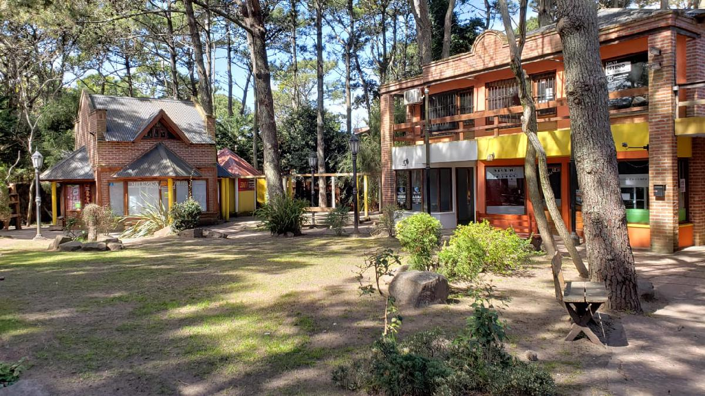
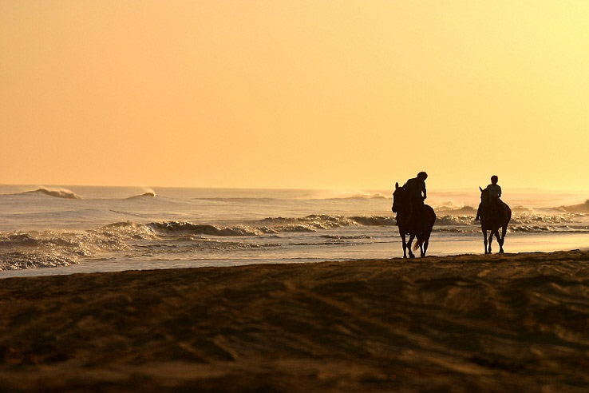

El balneario fue fundado en 1966, cuando todavía era un lugar desértico. Son considerados fundadores los señores Fidel A. Zabalo, Emilio Doura y Marcelino Grizutti, quienes compraron las tierras a la familia Duhau. La fijación de médanos y caminos se hicieron sin cambiar el relieve ondulado y suave.
Representa a Jesucristo crucificado, con María Magdalena a sus pies. La obra data de 1944 y tiene cinco metros de alto, fue donada por los fundadores de la ciudad. Es una zona agreste donde se conservan médanos con pinocha y cortaderas o colas de zorro autóctonas.

Este primer paseo de compras, con su particular arquitectura se erige entre altos pinares, impecable parquización y se halla rodeado por gran variedad de especies de arbustos, tachonados por el colorido de las flores. Se encuentra en Calle Las Camelias entre Av.2 y Av.3

Se suma a las actividades recreativas de Punta del Lago, organizando cabalgatas guiadas, nocturnas y diurnas. Posee una Escuela de Equitación que dicta clases para grupos de distintas edades. Dirección: Av. 4 y los Pensamientos, Punta del Lago.